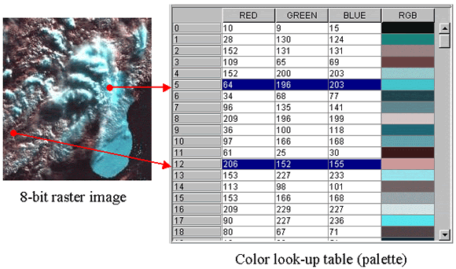
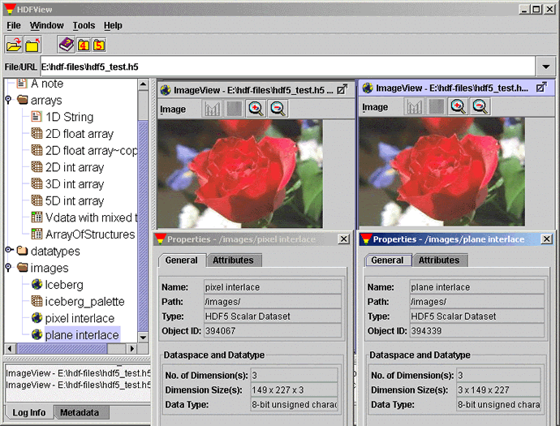
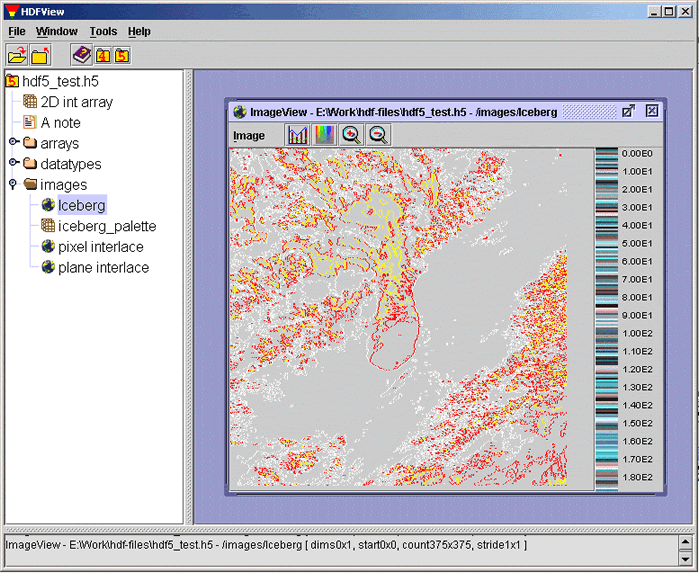
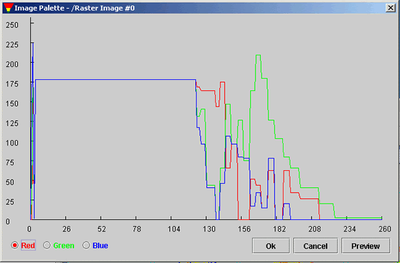
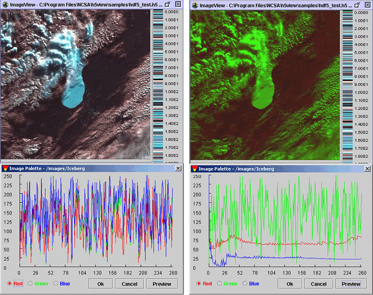
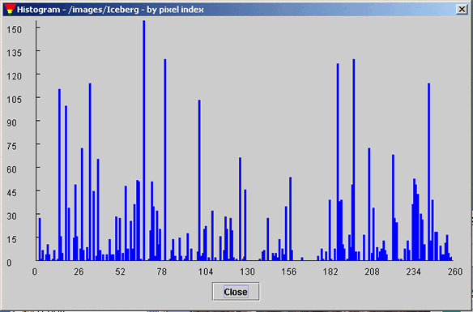

[Index] [1] [2] [3] [4] [5] [6] [7]
Image Viewer is a graphical window that displays HDF images. HDFView is a simple image viewer for HDF4/5 and has a limited function for processing an image.
An HDF4 image is a raster image of 8-bit pixels with an indexed RGB color table, or a 24-bit true color image. The HDF4 library provides image APIs to access image data and color tables.
An HDF5 image is a dataset that conforms to the HDF5 Image Specification. HDFView supports two types of images: indexed and true color. Both indexed image and true color image have predefined attributes and data layout according to the HDF5 image specification. For more details about HDF5 image, see the HDF5 Image Specification.
HDFView displays HDF4 raster images or HDF5 datasets that follow the HDF5 Image and Palette Specification for indexed images with an 8-bit standard RGB color model palette or three-dimensional true color images. Other image formats supported by the Image and Palette Specification are not supported by this tool.
If an image is larger than the visible area of the image viewer, users can grab and move the image by mouse-drag. Users can also use the side scroller bar to move the image to a desirable view area. Use Shift+Mouse-drag to select a subset of an image in the image viewer.
Fill values are displayed as the color black. Fill values are also excluded from calculating the minimum, maximum and other statistics.
An indexed image is one of the following:
The dataset is displayed as a Java image using IndexColorModel. The dataset is converted to a raster image using the first palette specified by the PALETTE attribute, or the default palette for HDF4. Multiple user-defined palettes (i.e., the PALETTE attribute may be a list) are not supported in version 1.0.
The dataset of an indexed image holds the values of indices of the color look-up table (palette). The dataset is converted into image pixels by looking up the index in the color table. The following figure is an example of mapping dataset values into pixels.

Mapping of Dataset Values to Image Pixels
For a two-dimensional indexed image, HDFView assumes that the width of the image is the size of the second dimension and the height of the image is the size of the first dimension, i.e. dim[0]=height and dim[1]=width.
Although HDFView displays the entire image by the order of (dim[0], dim[1], dim[2])=(depth, height, width) by default, you can always change the order and select a subset for the display as discussed in Chapter 5.
HDFView also displays a three-dimensional array as an array of 2-D images arranged along the third dimension, i.e. dim[0]=depth, dim[1]=height and dim[2]=width. You can flip back and forth to look at images at a different position of the depth dimension. For instance, if the dataset is 20 x 400 x 600 (dim[0]=20, dim[1]=400, and dim[2]=600), HDFView will display it as 20 images each with the size of 600 x 400 (width is 600, height is 400). However, a three-dimension image of [1][height][width] or [height][width][1] is treated as a two-dimension indexed image of [height][width].
A 2-D or 3-D SDS or HDF5 dataset with integer or float data can be displayed as an indexed image using the "Open As" selection from the Object menu. Since the dataset does not have a palette, a default palette is used. The palette is chosen from the "Select Palette" menu in the "Dataset Selection" window. The predefined palettes include:
In the case of an image with more than one component per pixel (e.g., Red, Green, and Blue), the data may be arranged in one of two ways. HDFView only supports three color components: red, green and blue.
Following HDF4 terminology, the data may be interlaced by pixel or by plane. For an HDF5 Image dataset the interlace should be indicated by the INTERLACE_MODE attribute. In both cases, the dataset will have a dataspace with three dimensions, height, width, and components. For pixel interlace, the data is arranged in the following order: [height][width][pixel components]. For plane interlace, the data is arranged in the following order: [pixel components][height][width].
The translation from pixel values to color components for display or processing purposes is a one-to-one correspondence of data values to components. Data of RGB color components is converted into byte data, which is packed into a single int pixel. The Java Image is created with a DirectColorModel, with masks to define packed samples. This color model is similar to an X11 TrueColor visual. The default RGB ColorModel is specified with the following parameters:
Number of bits: 32 Red mask: 0x00ff0000 Green mask: 0x0000ff00 Blue mask: 0x000000ff Alpha mask: 0xff000000 Color space: sRGB isAlphaPremultiplied: False Transparency: Transparency.TRANSLUCENT transferType: DataBuffer.TYPE_INT
The following figure shows examples of true color images. The image on the left is pixel interleaving with dimensions of [149][227][3]. The image on the right is plane interleaving with dimensions of [3][149][227].

True Color Image Displayed in the Image View
HDFView supports only limited image manipulation such as zooming, flipping, and contour. You can zoom in and out of an image. The minimum zoom factor is 1/8 (reduced to 1/8 the size) and the maximum is 8 (magnified to 8 times the size). Reduction (zoom out) is done by sampling pixels, for example, a 1/2-size image is created by selecting every second pixel. Magnification (zoom in) is done by replicating pixels.
You can also flip an image horizontally or vertically. Flipping an image will change the coordinates of the image. This technique can be used to adjust images that may have been created with different origins from the defaults.
Manipulating the "contour" creates a contour plot of the pixel values. The contour can have from three to nine contour levels. Level three provides less details of contour and level nine provides more. Repeated contour operations show a cumulative effect of contouring. For example, if you contour an image with level 3 and then contour that resulting image with level 4, the final image shows the cumulative effect of applying a level 4 to the level 3–contoured image.
The following figure shows a contour image of level nine.

Contour Image (Level Nine)
A palette (or color lookup table) is the means by which color is applied to an image. It is a table in which every row contains the numerical representation of a particular color. In the example of an 8-bit standard RGB color model palette, this numerical representation of a color is presented as a triplet specifying the intensity of the red, green, and blue components that make up each color.
Although the HDF5 palette specification allows for variable color length, different look-up methods, and color models beyond RGB, HDFView only supports the indexed RGB color model of 256 colors. To view the image palette, click the palette icon on the tool bar or select the palette command from the image menu. The red, green, and blue components of the color table are plotted in a line plot.

Image Palette (256 Colors)
To view the pixel values of each individual point, check the "Show value" item in the "Image" menu. When you move the mouse over the image, the pixel values of the mouse point are shown at the bottom of the image.
You can modify the values of the color table. Select the color (red, green, or blue) in the palette view and drag the line of the selected color. The value of the selected color changes as you move the color line. In the following figure, the image on the left is the orginal image, and the image on the right is the image with a modified color table.

Modified Image Palette (256 Colors)
The frequency of pixel values of a selected area, or the whole image, can be displayed in a histogram chart. The horizontal axis of the histogram chart depicts the 256 pixel values. The vertical axis shows the frequency of the pixel values.

Histogram of Pixel Values
Using HDFView, you can convert a JPEG, GIF, PNG, or BMP image into an HDF4 or HDF5 image. Select the "Convert Image To" command in the Tools menu, a popup window prompts you to choose the image file that you want to convert. The image is converted into a 24-bit HDF4 or HDF5 image. The current conversion does not support an image with indexed color model or an image with less than two color components. The image data is saved as an 8-bit unsigned integer regardless of the data type of the original image.
[Index] [1] [2] [3] [4] [5] [6] [7]